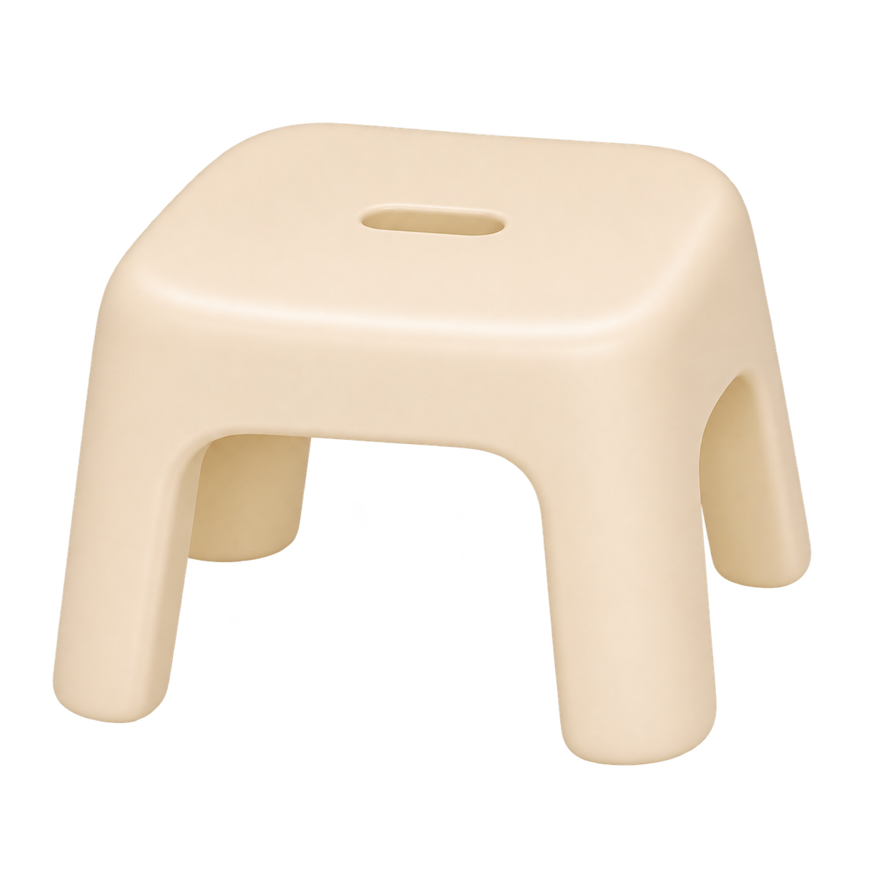
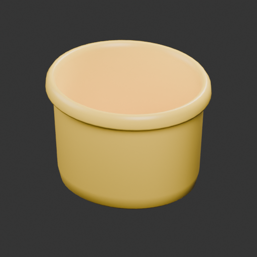
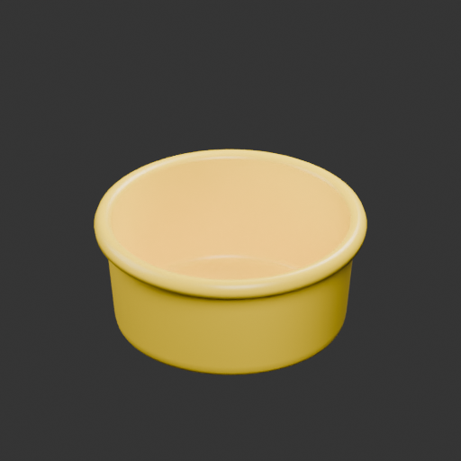
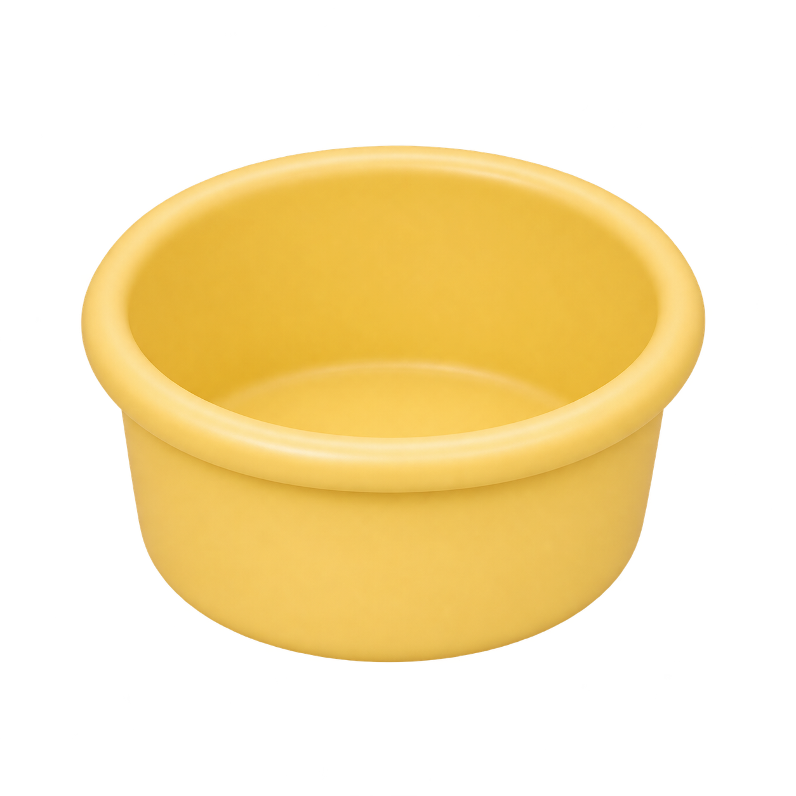

椅子と湯桶の修正前後です。書き出したモデルを読み戻し、カメラ・照明・露出・配置枠をそろえて比較しています。
座面の三角形の陰影、側面アーチの折れ、足先の輪郭を個別に確認。穴と脚の縁を保ち、平らな部分から面を減らしています。
椅子を5方向・4種類の材質で比較 →
参照はカメラ・照明が異なるため、画像差をそのまま形状誤差とは扱っていません。


縦横別々の拡大をやめ、生成元の自然な比率へ戻しました。丸い縁に頂点を配分し、形を固定して黄色の明度も比較調整しています。配置時の縮小も含む比較です。
湯桶を5方向・4種類の材質で比較 →
色の完全一致や、参照から見えない裏面の正解は保証していません。
編集用の詳細モデルとゲーム用モデルを分け、修正 → 書き出し → 再読込 → 同条件比較 → 別担当の素材確認を繰り返します。形状や面数の検査に通っても、目立つ歪みがあれば差し戻します。